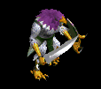
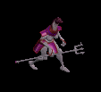
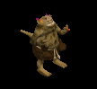
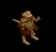
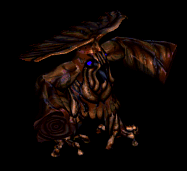
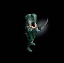
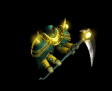
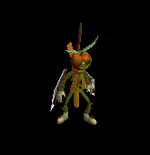
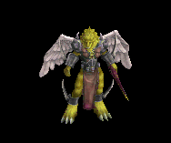
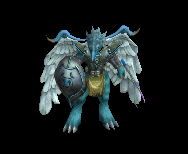

グローブ をドロップするmob一覧
一覧ページへ
| 死霊魔術師 | アンデット | セミ1 | |||||||
|---|---|---|---|---|---|---|---|---|---|
 | 杖(390) | 翼(260) | イベント(390) | グローブ(220) | 冠(200) | ブローチ(200) | 本(390) | 水晶(260) | |
| レイス | アンデット | セミ2 | |||||||
 | 杖(420) | 翼(280) | 状態異常回復1(420) | グローブ(230) | 冠(210) | ブローチ(250) | 本(420) | 水晶(280) | |
| ワイト | アンデット | セミ3 | |||||||
 | 杖(450) | 投擲(300) | cP回復(450) | グローブ(250) | 冠(230) | ブローチ(300) | 本(450) | ||
| リッチ | アンデット | ボス2 | |||||||
 | 杖(490) | 翼(330) | HP回復(490) | グローブ(270) | 冠(250) | ブローチ(400) | 本(490) | 水晶(330) | |
| アークリッチ | アンデット | ボス3 | |||||||
 | 杖(510) | 投擲(340) | 状態異常回復2(130) | グローブ(280) | 冠(260) | ブローチ(500) | 本(510) | ||
| ハンター | 人間 | 一般1 | |||||||
 | 弓(410) | 片手剣(270) | 矢(410) | グローブ(230) | 手首(210) | 腕刺青(150) | クロー(270) | 銃(410) | 魔弾(410) |
| アーチャー | 人間 | 一般2 | |||||||
 | 弓(380) | 片手剣(250) | 矢(380) | グローブ(210) | 手首(190) | 腕刺青(160) | クロー(250) | 銃(380) | 魔弾(380) |
| シューター | 人間 | 一般3 | |||||||
 | 弓(360) | 片手剣(240) | 矢(360) | グローブ(200) | 手首(180) | 腕刺青(170) | クロー(240) | 銃(360) | 魔弾(360) |
| スナイパー | 人間 | セミ1 | |||||||
 | 弓(390) | 片手剣(260) | 矢(390) | グローブ(220) | 手首(200) | 腕刺青(180) | クロー(260) | 銃(390) | 魔弾(390) |
| ブラックエルフ | 人間 | ボス1 | |||||||
 | 弓(470) | 片手剣(310) | イベント(470) | グローブ(260) | 手首(240) | 腕刺青(190) | クロー(310) | 銃(470) | |
| 原人 | 人間 | 一般2 | |||||||
 | 笛(380) | 牙(250) | イベント(380) | グローブ(210) | 槍投擲機(190) | 十字架(60) | 双剣(250) | ||
| イーター | 人間 | セミ1 | |||||||
 | 笛(390) | 牙(260) | 状態異常回復1(390) | グローブ(220) | 槍投擲機(200) | 十字架(80) | 双剣(260) | ||
| ブラックメイジ | 人間 | 一般4 | |||||||
 | 杖(300) | スリング(200) | 弾(300) | グローブ(170) | 爪(150) | 宝石(120) | 本(300) | ||
| 鷲戦士 | 悪魔 | 一般1 | |||||||
 | 片手剣(410) | 両手剣(270) | 盾(410) | グローブ(230) | 手首(210) | 腕刺青(110) | 鎌(270) | クロー(410) | |
| 鷲闘士 | 悪魔 | 一般2 | |||||||
 | 片手剣(380) | 弓(250) | 盾(380) | グローブ(210) | 手首(190) | 腕刺青(120) | クロー(380) | 銃(250) | |
| 鷲狂戦士 | 悪魔 | 一般3 | |||||||
 | 片手剣(360) | 弓(240) | 矢(360) | グローブ(200) | 手首(180) | 腕刺青(130) | クロー(360) | 銃(240) | 魔弾(360) |
| 鷲剣士 | 悪魔 | セミ1 | |||||||
|  | 片手剣(390) | 両手剣(260) | 盾(390) | グローブ(220) | 手首(200) | 腕刺青(140) | 鎌(260) | クロー(390) | |
| 鷲王 | 悪魔 | ボス1 | |||||||
 | 片手剣(470) | 弓(310) | 盾(470) | グローブ(260) | 手首(240) | 腕刺青(150) | クロー(470) | 銃(310) | |
| ナーガスフィア | 悪魔 | ボス1 | |||||||
|  | 槍(470) | 両手剣(310) | イベント(470) | グローブ(260) | 槍投擲機(240) | 肩刺青(130) | 鎌(310) | 箒(470) | |
| ウェアーゴート | 悪魔 | 一般3 | |||||||
 | 鞭(360) | 翼(240) | 鍵(20) | グローブ(200) | 指輪(180) | 宝石(140) | 水晶(240) | ||
| スパイダー | 動物 | 一般1 | |||||||
 | 片手剣(410) | 投擲(270) | 矢(410) | グローブ(230) | 首(210) | 帰還(160) | クロー(410) | 魔弾(410) | |
| フェイズスパイダ | 動物 | 一般2 | |||||||
 | 片手剣(380) | 投擲(250) | 矢(380) | グローブ(210) | 首(190) | 帰還(150) | クロー(380) | 魔弾(380) | |
| ソードスパイダー | 動物 | 一般3 | |||||||
 | 片手剣(360) | 槍(240) | 矢(360) | グローブ(200) | 首(180) | 能力向上1(140) | クロー(360) | 箒(240) | 魔弾(360) |
| ウィーブウィドウ | 動物 | セミ1 | |||||||
 | 片手剣(390) | 槍(260) | 矢(390) | グローブ(220) | 首(200) | 帰還(160) | クロー(390) | 箒(260) | 魔弾(390) |
| アラクノーイド | 動物 | ボス1 | |||||||
 | 片手剣(470) | 投擲(310) | 矢(470) | グローブ(260) | 首(240) | 宝石(190) | クロー(470) | 魔弾(470) | |
| 蟲の群れ | 動物 | 一般1 | |||||||
 | 笛(410) | 翼(270) | イベント(410) | グローブ(230) | イヤリング(210) | 帰還(160) | 水晶(270) | ||
| 巨大モグラ | 動物 | 一般4 | |||||||
 | 鞭(300) | 杖(200) | 状態異常回復2(80) | グローブ(170) | 指輪(150) | 能力向上1(120) | 本(200) | ||
| マインスィーパ | 動物 | セミ2 | |||||||
 | 鞭(420) | 杖(280) | 弾(420) | グローブ(230) | 指輪(210) | 能力向上1(170) | 本(280) | ||
| ブラックベアー | 動物 | 一般3 | |||||||
 | 牙(360) | 鞭(240) | 状態異常回復1(360) | グローブ(200) | 爪(180) | 宝石(140) | 双剣(360) | ||
| 死霊魔術師Ex | アンデット | セミ1 | |||||||
| 杖(450) | 翼(300) | イベント(450) | グローブ(250) | 冠(230) | 宝石(180) | 本(450) | 水晶(300) | |
| レイスEx | アンデット | セミ2 | |||||||
| 杖(650) | 翼(430) | 状態異常回復1(650) | グローブ(360) | 冠(330) | 宝石(260) | 本(650) | 水晶(430) | |
| ワイトEx | アンデット | セミ3 | |||||||
| 杖(800) | 投擲(530) | cP回復(800) | グローブ(440) | 冠(400) | 宝石(320) | 本(800) | ||
| リッチEx | アンデット | ボス2 | |||||||
| 杖(2000) | 翼(1330) | HP回復(2000) | グローブ(1110) | 冠(1000) | 宝石(800) | 本(2000) | 水晶(1330) | |
| アークリッチEx | アンデット | ボス3 | |||||||
| 杖(2800) | 投擲(1870) | 状態異常回復2(700) | グローブ(1560) | 冠(1400) | 宝石(1120) | 本(2800) | ||
| ハンターEx | 人間 | 一般1 | |||||||
| 弓(410) | 片手剣(270) | 矢(410) | グローブ(230) | 手首(210) | 腕刺青(150) | クロー(270) | 銃(410) | 魔弾(410) |
| アーチャーEx | 人間 | 一般2 | |||||||
| 弓(380) | 片手剣(250) | 矢(380) | グローブ(210) | 手首(190) | 腕刺青(160) | クロー(250) | 銃(380) | 魔弾(380) |
| アーチャーEx | 人間 | 一般3 | |||||||
| 弓(360) | 片手剣(240) | 矢(360) | グローブ(200) | 手首(180) | 腕刺青(170) | クロー(240) | 銃(360) | 魔弾(360) |
| スナイパーEx | 人間 | セミ1 | |||||||
| 弓(450) | 片手剣(300) | 矢(450) | グローブ(250) | 手首(230) | 腕刺青(180) | クロー(300) | 銃(450) | 魔弾(450) |
| ブラックエルフEx | 人間 | ボス1 | |||||||
| 弓(1200) | 片手剣(800) | イベント(1200) | グローブ(670) | 手首(600) | 腕刺青(190) | クロー(800) | 銃(1200) | |
| 原人Ex | 人間 | 一般2 | |||||||
| 笛(380) | 牙(250) | イベント(380) | グローブ(210) | 槍投擲機(190) | 十字架(60) | 双剣(250) | ||
| イーターEx | 人間 | セミ1 | |||||||
| 笛(450) | 牙(300) | 状態異常回復1(450) | グローブ(250) | 槍投擲機(230) | 十字架(80) | 双剣(300) | ||
| ブラックメイジEx | 人間 | 一般4 | |||||||
| 杖(300) | スリング(200) | 弾(300) | グローブ(170) | 爪(150) | 宝石(120) | 本(300) | ||
| 鷲戦士Ex | 悪魔 | 一般1 | |||||||
| 片手剣(410) | 両手剣(270) | 盾(410) | グローブ(230) | 手首(210) | 腕刺青(110) | 鎌(270) | クロー(410) | |
| 鷲闘士Ex | 悪魔 | 一般2 | |||||||
| 片手剣(380) | 弓(250) | 盾(380) | グローブ(210) | 手首(190) | 腕刺青(120) | クロー(380) | 銃(250) | |
| 鷲狂戦士Ex | 悪魔 | 一般3 | |||||||
| 片手剣(360) | 弓(240) | 矢(360) | グローブ(200) | 手首(180) | 腕刺青(130) | クロー(360) | 銃(240) | 魔弾(360) |
| 鷲剣士Ex | 悪魔 | セミ1 | |||||||
| 片手剣(450) | 両手剣(300) | 盾(450) | グローブ(250) | 手首(230) | 腕刺青(140) | 鎌(300) | クロー(450) | ||
| 鷲王Ex | 悪魔 | ボス1 | |||||||
| 片手剣(1200) | 弓(800) | 盾(1200) | グローブ(670) | 手首(600) | 腕刺青(150) | クロー(1200) | 銃(800) | |
| ナーガスフィアEx | 悪魔 | ボス1 | |||||||
| 槍(1200) | 両手剣(800) | イベント(1200) | グローブ(670) | 槍投擲機(600) | 肩刺青(130) | 鎌(800) | 箒(1200) | ||
| ウェアーゴートEx | 悪魔 | 一般3 | |||||||
| 鞭(360) | 翼(240) | 鍵(40) | グローブ(200) | 指輪(180) | 宝石(140) | 水晶(240) | ||
| スパイダーEx | 動物 | 一般1 | |||||||
| 片手剣(410) | 投擲(270) | 矢(410) | グローブ(230) | 首(210) | 帰還(160) | クロー(410) | 魔弾(410) | |
| フェイズスパイダEx | 動物 | 一般2 | |||||||
| 片手剣(380) | 投擲(250) | 矢(380) | グローブ(210) | 首(190) | 帰還(150) | クロー(380) | 魔弾(380) | |
| ソードスパイダーEx | 動物 | 一般3 | |||||||
| 片手剣(360) | 槍(240) | 矢(360) | グローブ(200) | 首(180) | 能力向上1(140) | クロー(360) | 箒(240) | 魔弾(360) |
| ウィーブウィドウEx | 動物 | セミ1 | |||||||
| 片手剣(450) | 槍(300) | 矢(450) | グローブ(250) | 首(230) | 帰還(180) | クロー(450) | 箒(300) | 魔弾(450) |
| アラクノーイドEx | 動物 | ボス1 | |||||||
| 片手剣(1200) | 投擲(800) | 矢(1200) | グローブ(670) | 首(600) | 宝石(480) | クロー(1200) | 魔弾(1200) | |
| 蟲の群れEx | 動物 | 一般1 | |||||||
| 笛(410) | 翼(270) | イベント(410) | グローブ(230) | イヤリング(210) | 帰還(160) | 水晶(270) | ||
| 巨大モグラEx | 動物 | 一般4 | |||||||
| 鞭(300) | 杖(200) | 状態異常回復2(80) | グローブ(170) | 指輪(150) | 能力向上1(120) | 本(200) | ||
| マインスィーパEx | 動物 | セミ2 | |||||||
| 鞭(650) | 杖(430) | 弾(650) | グローブ(360) | 指輪(330) | 能力向上1(260) | 本(430) | ||
| ブラックベアーEx | 動物 | 一般3 | |||||||
| 牙(360) | 鞭(240) | 状態異常回復1(360) | グローブ(200) | 爪(180) | 宝石(140) | 双剣(360) | ||
| ファイアブロアーEx | 神獣 | 一般1 | |||||||
|  | スリング(410) | 牙(270) | 弾(410) | グローブ(230) | 手首(210) | 能力向上2(160) | 双剣(410) | ||
| フーフーEx | 神獣 | 一般2 | |||||||
 | スリング(380) | 杖(250) | 弾(380) | グローブ(210) | 手首(190) | 能力向上2(150) | 本(250) | ||
| ブレイジャーEx | 神獣 | 一般3 | |||||||
|  | スリング(360) | 牙(240) | 弾(360) | グローブ(200) | 手首(180) | 能力向上2(140) | 双剣(240) | ||
| 炎鬼Ex | 神獣 | セミ1 | |||||||
 | スリング(450) | 杖(300) | 弾(450) | グローブ(250) | 手首(230) | 能力向上2(180) | 本(300) | ||
| 火炎悪魔Ex | 神獣 | ボス1 | |||||||
 | スリング(1200) | 牙(800) | 弾(1200) | グローブ(670) | 手首(600) | 能力向上2(480) | 双剣(800) | ||
| ティンバーマンEx | 神獣 | 一般4 | |||||||
|  | 杖(300) | 片手剣(200) | HP回復(300) | グローブ(170) | 首(150) | 能力向上1(120) | クロー(200) | 本(300) | |
| シャドウスEx | 神獣 | セミ2 | |||||||
 | 両手剣(650) | スリング(430) | 盾(650) | グローブ(360) | 手首(330) | 特殊1(260) | 鎌(650) | ||
| 骸骨サンタ | アンデット | ボス3 | |||||||
 | 弓(1210) | 片手剣(810) | 矢(1210) | グローブ(700) | 手首(610) | 腕刺青(150) | クロー(810) | 銃(1210) | 魔弾(1210) |
| 死霊魔術師Zin | アンデット | セミ1 | |||||||
| 杖(650) | 翼(430) | イベント(650) | グローブ(360) | 冠(330) | 宝石(260) | 本(650) | 水晶(430) | |
| レイスZin | アンデット | セミ2 | |||||||
| 杖(750) | 翼(500) | 状態異常回復1(750) | グローブ(420) | 冠(380) | 宝石(300) | 本(750) | 水晶(500) | |
| ワイトZin | アンデット | セミ3 | |||||||
| 杖(900) | 投擲(600) | cP回復(900) | グローブ(500) | 冠(450) | 宝石(360) | 本(900) | ||
| リッチZin | アンデット | ボス2 | |||||||
| 杖(1100) | 翼(730) | HP回復(1100) | グローブ(610) | 冠(550) | 宝石(440) | 本(1100) | 水晶(730) | |
| アークリッチZin | アンデット | ボス3 | |||||||
| 杖(1200) | 投擲(800) | 状態異常回復2(300) | グローブ(670) | 冠(600) | 宝石(480) | 本(1200) | ||
| ハンターZin | 人間 | 一般1 | |||||||
| 弓(1210) | 片手剣(810) | 矢(1210) | グローブ(670) | 手首(610) | 腕刺青(150) | クロー(810) | 銃(1210) | 魔弾(1210) |
| アーチャーZin | 人間 | 一般2 | |||||||
| 弓(1380) | 片手剣(920) | 矢(1380) | グローブ(770) | 手首(690) | 腕刺青(160) | クロー(920) | 銃(1380) | 魔弾(1380) |
| アーチャーZin | 人間 | 一般3 | |||||||
| 弓(1560) | 片手剣(1040) | 矢(1560) | グローブ(870) | 手首(780) | 腕刺青(170) | クロー(1040) | 銃(1560) | 魔弾(1560) |
| スナイパーZin | 人間 | セミ1 | |||||||
| 弓(650) | 片手剣(430) | 矢(650) | グローブ(360) | 手首(330) | 腕刺青(180) | クロー(430) | 銃(650) | 魔弾(650) |
| ブラックエルフZin | 人間 | ボス1 | |||||||
| 弓(1000) | 片手剣(670) | イベント(1000) | グローブ(560) | 手首(500) | 腕刺青(190) | クロー(670) | 銃(1000) | |
| 原人Zin | 人間 | 一般2 | |||||||
| 笛(1380) | 牙(920) | イベント(1380) | グローブ(770) | 槍投擲機(690) | 十字架(60) | 双剣(920) | ||
| イーターZin | 人間 | セミ1 | |||||||
| 笛(650) | 牙(430) | 状態異常回復1(650) | グローブ(360) | 槍投擲機(330) | 十字架(80) | 双剣(430) | ||
| ブラックメイジZin | 人間 | 一般4 | |||||||
| 杖(1200) | スリング(800) | 弾(1200) | グローブ(670) | 爪(600) | 宝石(480) | 本(1200) | ||
| 鷲戦士Zin | 悪魔 | 一般1 | |||||||
| 片手剣(1210) | 両手剣(810) | 盾(1210) | グローブ(670) | 手首(610) | 腕刺青(110) | 鎌(810) | クロー(1210) | |
| 鷲闘士Zin | 悪魔 | 一般2 | |||||||
| 片手剣(1380) | 弓(920) | 盾(1380) | グローブ(770) | 手首(690) | 腕刺青(120) | クロー(1380) | 銃(920) | |
| 鷲狂戦士Zin | 悪魔 | 一般3 | |||||||
| 片手剣(1560) | 弓(1040) | 矢(1560) | グローブ(870) | 手首(780) | 腕刺青(130) | クロー(1560) | 銃(1040) | 魔弾(1560) |
| 鷲剣士Zin | 悪魔 | セミ1 | |||||||
| 片手剣(650) | 両手剣(430) | 盾(650) | グローブ(360) | 手首(330) | 腕刺青(140) | 鎌(430) | クロー(650) | ||
| 鷲王Zin | 悪魔 | ボス1 | |||||||
| 片手剣(1000) | 弓(670) | 盾(1000) | グローブ(560) | 手首(500) | 腕刺青(150) | クロー(1000) | 銃(670) | |
| ナーガスフィアZin | 悪魔 | ボス1 | |||||||
| 槍(1000) | 両手剣(670) | イベント(1000) | グローブ(560) | 槍投擲機(500) | 肩刺青(130) | 鎌(670) | 箒(1000) | ||
| ウェアーゴートZin | 悪魔 | 一般3 | |||||||
| 鞭(1560) | 翼(1040) | 鍵(1560) | グローブ(870) | 指輪(780) | 宝石(620) | 水晶(1040) | ||
| スパイダーZin | 動物 | 一般1 | |||||||
| 片手剣(1210) | 投擲(810) | 矢(1210) | グローブ(670) | 首(610) | 帰還(480) | クロー(1210) | 魔弾(1210) | |
| フェイズスパイダZin | 動物 | 一般2 | |||||||
| 片手剣(1380) | 投擲(920) | 矢(1380) | グローブ(770) | 首(690) | 帰還(550) | クロー(1380) | 魔弾(1380) | |
| ソードスパイダーZin | 動物 | 一般3 | |||||||
| 片手剣(1560) | 槍(1040) | 矢(1560) | グローブ(870) | 首(780) | 能力向上1(620) | クロー(1560) | 箒(1040) | 魔弾(1560) |
| ウィーブウィドウZin | 動物 | セミ1 | |||||||
| 片手剣(650) | 槍(430) | 矢(650) | グローブ(360) | 首(330) | 帰還(260) | クロー(650) | 箒(430) | 魔弾(650) |
| アラクノーイドZin | 動物 | ボス1 | |||||||
| 片手剣(1000) | 投擲(670) | 矢(1000) | グローブ(560) | 首(500) | 宝石(400) | クロー(1000) | 魔弾(1000) | |
| 蟲の群れZin | 動物 | 一般1 | |||||||
| 笛(1210) | 翼(810) | イベント(1210) | グローブ(670) | イヤリング(610) | 帰還(480) | 水晶(810) | ||
| 巨大モグラZin | 動物 | 一般4 | |||||||
| 鞭(1200) | 杖(800) | 状態異常回復2(300) | グローブ(670) | 指輪(600) | 能力向上1(480) | 本(800) | ||
| マインスィーパZin | 動物 | セミ2 | |||||||
| 鞭(750) | 杖(500) | 弾(750) | グローブ(420) | 指輪(380) | 能力向上1(300) | 本(500) | ||
| ブラックベアーZin | 動物 | 一般3 | |||||||
| 牙(1560) | 鞭(1040) | 状態異常回復1(1560) | グローブ(870) | 爪(780) | 宝石(620) | 双剣(1560) | ||
| ファイアブロアーZin | 神獣 | 一般1 | |||||||
| スリング(1210) | 牙(810) | 弾(1210) | グローブ(670) | 手首(610) | 能力向上2(480) | 双剣(810) | |||
| フーフーZin | 神獣 | 一般2 | |||||||
| スリング(1380) | 杖(920) | 弾(1380) | グローブ(770) | 手首(690) | 能力向上2(550) | 本(920) | ||
| ブレイジャーZin | 神獣 | 一般3 | |||||||
| スリング(1560) | 牙(1040) | 弾(1560) | グローブ(870) | 手首(780) | 能力向上2(620) | 双剣(1040) | |||
| 炎鬼Zin | 神獣 | セミ1 | |||||||
| スリング(650) | 杖(430) | 弾(650) | グローブ(360) | 手首(330) | 能力向上2(260) | 本(430) | ||
| 火炎悪魔Zin | 神獣 | ボス1 | |||||||
| スリング(1000) | 牙(670) | 弾(1000) | グローブ(560) | 手首(500) | 能力向上2(400) | 双剣(670) | ||
| ティンバーマンZin | 神獣 | 一般4 | |||||||
| 杖(1200) | 片手剣(800) | HP回復(1200) | グローブ(670) | 首(600) | 能力向上1(480) | クロー(800) | 本(1200) | ||
| シャドウスZin | 神獣 | セミ2 | |||||||
| 両手剣(750) | スリング(500) | 盾(750) | グローブ(420) | 手首(380) | 特殊1(300) | 鎌(750) | ||
| セイジ | 人間 | ボス3 | |||||||
 | 弓(1380) | 片手剣(920) | 矢(1380) | グローブ(800) | 手首(690) | 腕刺青(160) | クロー(920) | 銃(1380) | 魔弾(1380) |
| セイジマスター | 人間 | セミ3 | |||||||
 | 弓(1560) | 片手剣(1040) | 矢(1560) | グローブ(900) | 手首(780) | 腕刺青(170) | クロー(1040) | 銃(1560) | 魔弾(1560) |
| ティアメス(上部触手) | 動物 | ボス3 | |||||||
 | 弓(1560) | 片手剣(1040) | 矢(1560) | グローブ(900) | 手首(780) | 腕刺青(170) | クロー(1040) | 銃(1560) | 魔弾(1560) |
| ティアメス(本体) | 動物 | ボス3 | |||||||
 | 弓(1560) | 片手剣(1040) | 矢(1560) | グローブ(900) | 手首(780) | 腕刺青(170) | クロー(1040) | 銃(1560) | 魔弾(1560) |
| ティアメス(下部触手) | 動物 | ボス3 | |||||||
 | 弓(1560) | 片手剣(1040) | 矢(1560) | グローブ(900) | 手首(780) | 腕刺青(170) | クロー(1040) | 銃(1560) | 魔弾(1560) |
 | 弓(1560) | 片手剣(1040) | 矢(1560) | グローブ(900) | 手首(780) | 腕刺青(170) | クロー(1040) | 銃(1560) | 魔弾(1560) |
| アークデビル | 悪魔 | ボス3 | |||||||
 | 弓(1560) | 片手剣(1040) | 矢(1560) | グローブ(900) | 手首(780) | 腕刺青(170) | クロー(1040) | 銃(1560) | 魔弾(1560) |
| ドラコリッチ | アンデット | ボス3 | |||||||
 | 弓(1560) | 片手剣(1040) | 矢(1560) | グローブ(900) | 手首(780) | 腕刺青(170) | クロー(1040) | 銃(1560) | 魔弾(1560) |
| ドラコリッチオーブ | アンデット | ボス3 | |||||||
 | 弓(1560) | 片手剣(1040) | 矢(1560) | グローブ(900) | 手首(780) | 腕刺青(170) | クロー(1040) | 銃(1560) | 魔弾(1560) |
| アンデッド魔法師1 Zin | アンデット | 一般4 | |||||||
 | 指輪(30) | マント(50) | 杖(90) | 能力向上1(130) | 矢(170) | グローブ(200) | 本(90) | 魔弾(170) | 魔弾(170) |
| アンデッド魔法師2 Zin | アンデット | セミ1 | |||||||
 | 鍵(50) | マント(90) | 弾(160) | 手首(230) | 肩刺青(300) | グローブ(350) | |||
| アンデッド魔法師4 Zin | アンデット | ボス1 | |||||||
 | 指輪(150) | 状態異常回復2(250) | 弾(450) | 手首(650) | 矢(850) | グローブ(1000) | 魔弾(850) | ||
| アンデッドライト2 Zin | アンデット | セミ2 | |||||||
 | 指輪(80) | マント(140) | 弾(250) | 手首(360) | 矢(470) | グローブ(550) | 魔弾(470) | ||
| アンデッドライト4 Zin | アンデット | ボス2 | |||||||
 | 指輪(270) | マント(450) | 弾(810) | 手首(1170) | 矢(1530) | グローブ(1800) | 魔弾(1530) | ||
| アンデッドメイジ2 Zin | アンデット | セミ3 | |||||||
 | 鍵(110) | マント(180) | 弾(320) | 手首(460) | 矢(600) | グローブ(700) | 魔弾(600) | ||
| アンデッドメイジ4 Zin | アンデット | ボス3 | |||||||
 | 指輪(360) | マント(600) | 弾(1080) | 手首(1560) | 肩刺青(2040) | グローブ(2400) | |||
| アンデッドロック1 Zin | アンデット | セミ1 | |||||||
 | 指輪(50) | マント(90) | 帰還(160) | 手首(230) | 矢(300) | グローブ(350) | 魔弾(300) | ||
| アンデッドロック3 Zin | アンデット | ボス2 | |||||||
 | 宝石(270) | マント(450) | 職業鎧(810) | 手首(1170) | 矢(1530) | グローブ(1800) | 魔弾(1530) | ||
| 逃亡魔法師Zin | 人間 | 一般3 | |||||||
 | 宝石(70) | 鈍器(200) | 両手剣(130) | 槍(100) | ステッキ(30) | グローブ(40) | 鎌(130) | 箒(100) | |
| 逃亡魔法師3 Zin | 人間 | セミ2 | |||||||
 | 鍵(140) | 弾(410) | 両手剣(280) | 能力向上1(220) | 肩刺青(60) | グローブ(80) | 鎌(280) | ||
| 逃亡ハンター2 Zin | 人間 | セミ3 | |||||||
 | 投擲(180) | 鈍器(530) | 帰還(350) | 槍(280) | ステッキ(70) | グローブ(110) | 箒(280) | ||
| 逃亡ハンター4 Zin | 人間 | ボス2 | |||||||
|  | 投擲(450) | 鈍器(1350) | 両手剣(900) | 槍(720) | ステッキ(180) | グローブ(270) | 鎌(900) | 箒(720) | |
| 脱獄犯1 Zin | 人間 | セミ2 | |||||||
 | 鍵(140) | 鈍器(410) | 帰還(280) | cP回復(220) | ステッキ(60) | グローブ(80) | |||
| 脱獄犯3 Zin | 人間 | ボス1 | |||||||
 | 鍵(250) | 鈍器(750) | 両手剣(500) | 能力向上1(400) | ステッキ(100) | グローブ(150) | 鎌(500) | ||
| 脱獄犯4 Zin | 人間 | ボス3 | |||||||
 | 投擲(600) | ブローチ(1800) | 腕刺青(1200) | 槍(960) | 両手剣(240) | グローブ(360) | 鎌(240) | 箒(960) | |
| 古代悪魔1 Zin | 悪魔 | セミ1 | |||||||
 | 鍵(230) | 首(280) | 両手剣(120) | 手首(70) | 状態異常回復1(40) | グローブ(20) | 鎌(120) | ||
| 古代悪魔3 Zin | 悪魔 | ボス2 | |||||||
 | 宝石(1170) | 首(1440) | 両手剣(590) | 能力向上1(360) | 弓(180) | グローブ(90) | 鎌(590) | 銃(180) | |
| 古代悪魔4 Zin | 悪魔 | ボス3 | |||||||
 | 指輪(1560) | 状態異常回復2(1920) | 両手剣(790) | 手首(480) | 状態異常回復1(240) | グローブ(120) | 鎌(790) | ||
| 死神 Zin | 悪魔 | 一般4 | |||||||
|  | 指輪(130) | 首(160) | 両手剣(70) | 手首(40) | 弓(20) | グローブ(10) | 鎌(70) | 銃(20) | |
| 死神1 Zin | 悪魔 | セミ1 | |||||||
 | 指輪(230) | ブローチ(280) | 十字架(120) | 十字架(70) | 状態異常回復1(40) | グローブ(20) | |||
| 死神3 Zin | 悪魔 | ボス2 | |||||||
 | 能力向上2(1170) | 職業鎧(1440) | 両手剣(590) | 能力向上1(360) | 肩刺青(180) | グローブ(90) | 鎌(590) | ||
| 邪臣 Zin | 悪魔 | セミ1 | |||||||
 | 鍵(230) | 首(280) | 腕刺青(120) | 手首(70) | 肩刺青(40) | グローブ(20) | |||
| 邪臣2 Zin | 悪魔 | セミ3 | |||||||
 | 鍵(460) | ブローチ(560) | 両手剣(230) | 十字架(140) | 弓(70) | グローブ(40) | 鎌(230) | 銃(70) | |
| 邪臣4 Zin | 悪魔 | ボス3 | |||||||
 | 鍵(1560) | 首(1920) | 両手剣(790) | 手首(480) | 弓(240) | グローブ(120) | 鎌(790) | 銃(240) | |
| パンプキンヘッド Zin | 悪魔 | 一般4 | |||||||
 | 指輪(130) | 状態異常回復2(160) | 帰還(70) | 能力向上1(40) | 腰(20) | グローブ(10) | |||
| パンプキンヘッド2 Zin | 悪魔 | セミ3 | |||||||
 | 鍵(460) | ブローチ(560) | cP回復(230) | 笛(140) | 腰(70) | グローブ(40) | |||
| パンプキンヘッド4 Zin | 悪魔 | ボス2 | |||||||
 | 指輪(1170) | 首(1440) | 足(590) | 笛(360) | 腰(180) | グローブ(90) | |||
| ジャックランタン1 Zin | 悪魔 | セミ2 | |||||||
 | 指輪(360) | ブローチ(440) | 腕刺青(180) | 笛(110) | 腰(60) | グローブ(30) | |||
| ジャックランタン2 Zin | 悪魔 | ボス1 | |||||||
|  | 指輪(650) | 首(800) | 弾(330) | 能力向上1(200) | 肩刺青(100) | グローブ(50) | |||
| ジャックランタン3 Zin | 悪魔 | ボス2 | |||||||
 | 能力向上2(1170) | 首(1440) | 帰還(590) | 笛(360) | 腰(180) | グローブ(90) | |||
| ジャックランタン4 Zin | 悪魔 | ボス3 | |||||||
 | 指輪(1560) | 弾(1920) | 足(790) | マント(480) | 腰(240) | グローブ(120) | |||
| エルダーパンプキン1 Zin | 悪魔 | セミ3 | |||||||
 | 鍵(460) | 首(560) | 足(230) | 笛(140) | 状態異常回復1(70) | グローブ(40) | |||
| エルダーパンプキン2 Zin | 悪魔 | ボス1 | |||||||
 | 指輪(650) | 状態異常回復2(800) | 腕刺青(330) | 能力向上1(200) | 腰(100) | グローブ(50) | |||
| エルダーパンプキン4 Zin | 悪魔 | ボス3 | |||||||
 | 能力向上2(1560) | 首(1920) | cP回復(790) | 笛(480) | 腰(240) | グローブ(120) | |||
| 堕天使1 Zin | 神獣 | セミ1 | |||||||
 | 鍵(160) | イヤリング(230) | 足(120) | 手首(20) | ステッキ(40) | グローブ(90) | |||
| 堕天使2 Zin | 神獣 | セミ3 | |||||||
 | 投擲(320) | イヤリング(460) | 足(250) | 手首(40) | cP回復(70) | グローブ(180) | |||
| 堕天使4 Zin | 神獣 | ボス3 | |||||||
 | 投擲(1080) | イヤリング(1560) | 足(840) | 手首(120) | ステッキ(240) | グローブ(600) | |||
| イーグルヘッド3 Zin | 神獣 | ボス2 | |||||||
|  | 投擲(810) | イヤリング(1170) | 足(630) | 鞭(90) | 能力向上2(180) | グローブ(450) | |||
| イーグルヘッド4 Zin | 神獣 | ボス3 | |||||||
 | 鍵(1080) | イヤリング(1560) | 足(840) | 手首(120) | ステッキ(240) | グローブ(600) | |||
| ライオンヘッド1 Zin | 神獣 | セミ2 | |||||||
 | 投擲(250) | イヤリング(360) | 足(190) | 手首(30) | ステッキ(60) | グローブ(140) | |||
| ライオンヘッド2 Zin | 神獣 | セミ3 | |||||||
 | 鍵(320) | イヤリング(460) | 宝石(250) | 手首(40) | 能力向上2(70) | グローブ(180) | |||
| ライオンヘッド4 Zin | 神獣 | ボス3 | |||||||
|  | 鍵(1080) | イヤリング(1560) | 足(840) | 手首(120) | cP回復(240) | グローブ(600) | |||
| 黒魔術師 | 人間 | 一般4 | |||||||
| 杖(300) | スリング(200) | 弾(300) | グローブ(170) | 爪(150) | 宝石(120) | 本(300) | ||
| 黒魔術師 Ex | 人間 | 一般4 | |||||||
| 杖(300) | スリング(200) | 弾(300) | グローブ(170) | 爪(150) | 宝石(120) | 本(300) | ||
| 死の影 Ex | 神獣 | セミ2 | |||||||
| 両手剣(650) | スリング(430) | 盾(650) | グローブ(360) | 手首(330) | 特殊1(260) | 鎌(650) | ||
| 土蜘蛛 | 動物 | 一般2 | |||||||
| 片手剣(380) | 投擲(250) | 矢(380) | グローブ(210) | 首(190) | 帰還(150) | クロー(380) | 魔弾(380) | |
| 皇帝蜘蛛 | 動物 | 一般3 | |||||||
| 片手剣(360) | 槍(240) | 矢(360) | グローブ(200) | 首(180) | 能力向上1(140) | クロー(360) | 箒(240) | 魔弾(360) |
| 女郎蜘蛛 | 動物 | セミ1 | |||||||
| 片手剣(390) | 槍(260) | 矢(390) | グローブ(220) | 首(200) | 帰還(160) | クロー(390) | 箒(260) | 魔弾(390) |
| 猛毒蜘蛛 | 動物 | ボス1 | |||||||
| 片手剣(470) | 投擲(310) | 矢(470) | グローブ(260) | 首(240) | 宝石(190) | クロー(470) | 魔弾(470) | |
| 土蜘蛛 Ex | 動物 | 一般2 | |||||||
| 片手剣(380) | 投擲(250) | 矢(380) | グローブ(210) | 首(190) | 帰還(150) | クロー(380) | 魔弾(380) | |
| 皇帝蜘蛛 Ex | 動物 | 一般3 | |||||||
| 片手剣(360) | 槍(240) | 矢(360) | グローブ(200) | 首(180) | 能力向上1(140) | クロー(360) | 箒(240) | 魔弾(360) |
| 女郎蜘蛛 Ex | 動物 | セミ1 | |||||||
| 片手剣(450) | 槍(300) | 矢(450) | グローブ(250) | 首(230) | 帰還(180) | クロー(450) | 箒(300) | 魔弾(450) |
| 猛毒蜘蛛 Ex | 動物 | ボス1 | |||||||
| 片手剣(1200) | 投擲(800) | 矢(1200) | グローブ(670) | 首(600) | 宝石(480) | クロー(1200) | 魔弾(1200) | |
| デーモン兵士 | 悪魔 | 一般3 | |||||||
| 鞭(360) | 翼(240) | 鍵(20) | グローブ(200) | 指輪(180) | 宝石(140) | 水晶(240) | ||
| デーモン兵士 Ex | 悪魔 | 一般3 | |||||||
| 鞭(360) | 翼(240) | 鍵(40) | グローブ(200) | 指輪(180) | 宝石(140) | 水晶(240) | ||
| スコフィールダー Zin | 人間 | 一般4 | |||||||
| 宝石(70) | 鈍器(200) | 両手剣(130) | 槍(100) | ステッキ(30) | グローブ(40) | 鎌(130) | 箒(100) | |
| 引導者 Zin | 悪魔 | 一般4 | |||||||
| 指輪(130) | 首(160) | 両手剣(70) | 手首(40) | 弓(20) | グローブ(10) | 鎌(70) | 銃(20) | ||
| ジャックランタン Zin | 悪魔 | 一般4 | |||||||
| 指輪(130) | 状態異常回復2(160) | 帰還(70) | 能力向上1(40) | 腰(20) | グローブ(10) | |||
| ハゲワシ闘士 Zin | 悪魔 | セミ1 | |||||||
| 片手剣(1380) | 弓(920) | 盾(1380) | グローブ(770) | 手首(690) | 腕刺青(120) | クロー(1380) | 銃(920) | |
| イーグル狂戦士 Zin | 悪魔 | セミ1 | |||||||
| 片手剣(1560) | 弓(1040) | 矢(1560) | グローブ(870) | 手首(780) | 腕刺青(130) | クロー(1560) | 銃(1040) | 魔弾(1560) |
| ハゲワシ剣士 Zin | 悪魔 | セミ1 | |||||||
| 片手剣(650) | 両手剣(430) | 盾(650) | グローブ(360) | 手首(330) | 腕刺青(140) | 鎌(430) | クロー(650) | ||
| ハゲワシ勇者 Zin | 悪魔 | ボス1 | |||||||
| 片手剣(1000) | 弓(670) | 盾(1000) | グローブ(560) | 手首(500) | 腕刺青(150) | クロー(1000) | 銃(670) | |
| 時の木 Zin | 神獣 | セミ1 | |||||||
| 杖(1200) | 片手剣(800) | HP回復(1200) | グローブ(670) | 首(600) | 能力向上1(480) | クロー(800) | 本(1200) | ||
| ダークアーチャー Zin | 人間 | ボス1 | |||||||
| 弓(1000) | 片手剣(670) | イベント(1000) | グローブ(560) | 手首(500) | 腕刺青(190) | クロー(670) | 銃(1000) | |
| ジャックランタン Zin | 悪魔 | 一般4 | |||||||
| 指輪(130) | 状態異常回復2(160) | 帰還(70) | 能力向上1(40) | 腰(20) | グローブ(10) | |||
| 引導者 Zin | 悪魔 | 一般4 | |||||||
| 指輪(130) | 首(160) | 両手剣(70) | 手首(40) | 弓(20) | グローブ(10) | 鎌(70) | |||
| スコフィールダー Zin | 人間 | 一般4 | |||||||
| 宝石(70) | 鈍器(200) | 両手剣(130) | 槍(100) | ステッキ(30) | グローブ(40) | 鎌(130) | 箒(100) | |
| ウェアーゴートEv | 悪魔 | 一般3 | |||||||
| 鞭(1560) | 翼(1040) | 鍵(1560) | グローブ(870) | 指輪(780) | 宝石(620) | 水晶(1040) | ||
| 鷲狂戦士Ev | 悪魔 | 一般3 | |||||||
| 片手剣(1560) | 弓(1040) | 矢(1560) | グローブ(870) | 手首(780) | 腕刺青(130) | クロー(1560) | 銃(1040) | 魔弾(1560) |
| ソードスパイダーEv | 動物 | 一般3 | |||||||
| 片手剣(1560) | 槍(1040) | 矢(1560) | グローブ(870) | 首(780) | 能力向上1(620) | クロー(1560) | 箒(1040) | 魔弾(1560) |
| シューターEv | 人間 | 一般3 | |||||||
| 弓(1560) | 片手剣(1040) | 矢(1560) | グローブ(870) | 手首(780) | 腕刺青(170) | クロー(1040) | 銃(1560) | 魔弾(1560) |
| ブラックベアーEv | 動物 | 一般3 | |||||||
| 牙(1560) | 鞭(1040) | 状態異常回復1(1560) | グローブ(870) | 爪(780) | 宝石(620) | 双剣(1560) | ||
| ブレイジャーEv | 神獣 | 一般3 | |||||||
| スリング(1560) | 牙(1040) | 弾(1560) | グローブ(870) | 手首(780) | 能力向上2(620) | 双剣(1040) | |||
| ブラックメイジEv | 人間 | 一般4 | |||||||
| 杖(1200) | スリング(800) | 弾(1200) | グローブ(670) | 爪(600) | 宝石(480) | 本(1200) | ||
| マインスィーパEv | 動物 | セミ2 | |||||||
| 鞭(750) | 杖(500) | 弾(750) | グローブ(420) | 指輪(380) | 能力向上1(300) | 本(500) | ||
| 火炎悪魔Ev | 神獣 | ボス1 | |||||||
| スリング(1000) | 牙(670) | 弾(1000) | グローブ(560) | 手首(500) | 能力向上2(400) | 双剣(670) | ||
| アークリッチEv | アンデット | ボス3 | |||||||
| 杖(1200) | 投擲(800) | 状態異常回復2(300) | グローブ(670) | 冠(600) | 宝石(480) | 本(1200) | ||
| ジャックランタン4 Sp | 悪魔 | 一般4 | |||||||
| 指輪(1300) | 状態異常回復2(1500) | 帰還(700) | 能力向上1(400) | 腰(200) | グローブ(100) | |||
| ワイトSp | アンデット | セミ1 | |||||||
| 杖(700) | 翼(400) | イベント(600) | グローブ(400) | 冠(300) | 宝石(300) | 本(700) | 水晶(400) | |
| 逃亡魔法師Sp | 人間 | 一般4 | |||||||
 | 宝石(1000) | 鈍器(1400) | 両手剣(800) | 槍(700) | ステッキ(600) | グローブ(400) | 鎌(1400) | 箒(700) | |
| パンプキンヘッドSp | 悪魔 | 一般4 | |||||||
| 指輪(1300) | 状態異常回復2(1500) | 帰還(700) | 能力向上1(400) | 腰(200) | グローブ(100) | |||
| 覚醒パンプキンZin | 悪魔 | セミ1 | |||||||
 | 指輪(130) | 状態異常回復2(160) | 帰還(70) | 能力向上1(40) | 腰(20) | グローブ(10) | |||
| 逃亡ハンター Sp | 人間 | 一般4 | |||||||
| 宝石(1000) | 鈍器(1400) | 両手剣(800) | 槍(700) | ステッキ(600) | グローブ(400) | 鎌(1400) | 箒(700) | ||
| 逃亡魔法師Sp[テスト用] | 人間 | 一般4 | |||||||
| 宝石(1000) | 鈍器(1400) | 両手剣(800) | 槍(700) | ステッキ(600) | グローブ(400) | 鎌(1400) | 箒(700) |